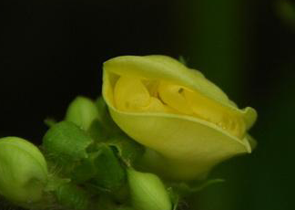

Specie: Vigna angularis
Taxonomy: Fabaceae; Papilionoideae; 50 kb inversion clade; NPAAA clade; indigoferoid/millettioid clade; Phaseoleae; Vigna
Abbr: Van
Level: Chromosome
chromosome number: 2n=2X=22

Introduction: Vigna angularis, also known as the adzuki bean (Japanese: 小豆 (アズキ), azuki, Uncommon アヅキ, adzuki), azuki bean, aduki bean, red bean, or red mung bean, is an annual vine widely cultivated throughout East Asia for its small (approximately 5 mm or 1⁄4 in long) bean. The cultivars most familiar in East Asia have a uniform red color, but there are also white, black, gray, and variously mottled varieties. Cooked adzuki beans are 66% water, 25% carbohydrates, including 7% dietary fiber, 8% protein, and contain negligible fat (table). In a 100-gram reference amount, cooked beans provide 536 kilojoules (128 kilocalories) of food energy, a moderate to high content (10% or more of the Daily Value, DV) of the B vitamin folate (30% DV), and several dietary minerals (11% to 27% DV, table).
Distribution: Assam, China South-Central, China Southeast, East Himalaya, Japan, Myanmar, Nepal, Taiwan, Vietnam
Article Title: Genome sequencing of adzuki bean (Vigna angularis) provides insight into high starch and low fat accumulation and domestication
Data source: Data deposition: This Whole Genome Shotgun project has been deposited at DNA Data Bank of Japan/European Molecular Biology Laboratory/GenBank under the accession no. JZJH00000000. The version described in this paper is version JZJH01000000. All short-read data have been deposited into the Sequence Read Archive (SRA) under accession no. SRA259080. Raw sequence data of the transcriptomes have been deposited into the SRA under accession no. SRA260020.